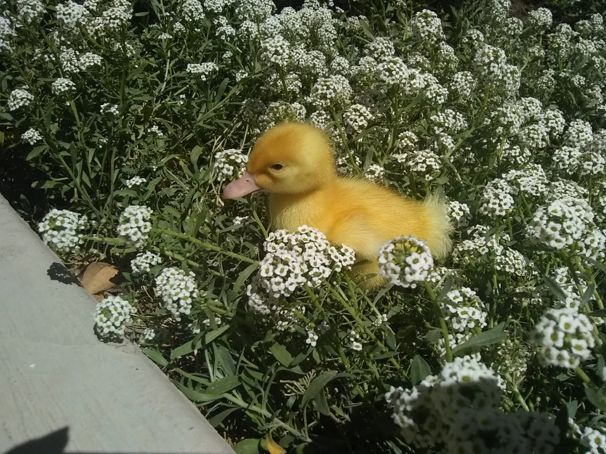

Marzo 29, 2021
En "the duckling flower shop" lo más importante es satisfacer las necesidades del cliente,
es por eso que al contar con más de 12 años de exprecientcia podemos decir que contamos con todo el
personal necesario para brindarle la mejor atención a cualquiera que visite nuestros establecimientos.


Sandra Mabel Bañuelos Monroy
Técnico en programación egresado del CETIS 113,
estudiante de ingeniería en sistemas que en sus ratos libres goza observar a la naturaleza, en ella afirma haber encontrado una belleza y tranquilidad inigualables

Al aceptar que todo es pasajero y que realmente no poseemos absolutamente nada, mientras miraba a su pequeño pato juguetear en las flores, Sandra descubrió que hay objetos que logran preservar durante más tiempo las emociones, entre ellos las flores.
"Regalar flores es regalar momentos de felicidad".
Cada uno de nuestros productos ha sido cultivado delicadamente en granjas que cuentan con los más estrictos estándares de calidad en el cultivo de flores.
Lucía Castro:"Cuando me casé el mes pasado y faltaban solo 4 días para la ceremonia, el servicio que había contratado con otra florería simplemente canceló, yo no sabía que hacer, hasta que encontré a "The duckling flower shop" y en menos de 2 días estaba listo mi pedido."
Carlos Aguilera:"Siempre he amado a mi novia, pero al momento de querer darle un detalle con flores ha sido casi imposible, ella es alergica a la mayoría de las flores, excepto a los claveles azules, nunca antes os había visto hasta que encontré "The duckling flower shop", excelente servicio."
Nos gusta estar al contacto con nuestros clientes, demostrarles que en realidad importan demasiado, es por eso que ponemos nuestras redes sociales a su disposición, búscanos en Facebook. Twitter e Instagram ó, llamanos al número
(492) 123-7780